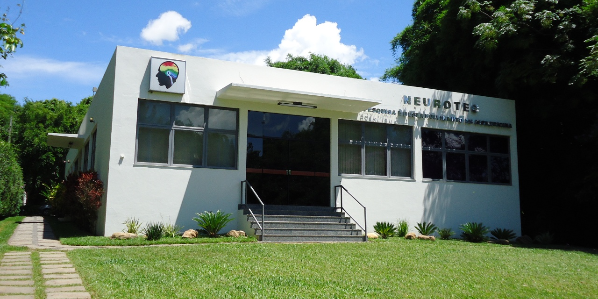
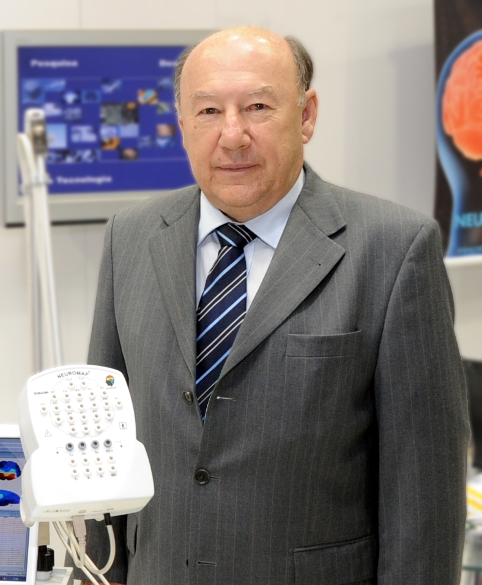

Em conformidade às políticas de qualidade, pesquisa e desenvolve produtos e tecnologias de nível internacional, procurando o melhor resultado na utilização de seus equipamentos. A Neurotec® mantém um corpo de pesquisadores altamente qualificados e, contando com os mais avançados recursos tecnológicos, encontra amplo suporte em seus usuários.
Ao criar o NEUROMAP®, a Neurotec® combinou custo com o que há de mais avançado em tecnologia de eletrencefalógrafos digitais, disponibilizando o primeiro equipamento de EEG Digital com Mapeamento Cerebral, para o mercado brasileiro.
Atualmente a Neurotec® está em todos os segmentos da Neurofisiologia Clínica, produzindo equipamentos microprocessados de arquitetura aberta com a mais Alta Tecnologia, além de fornecer toda a linha de suprimentos e acessórios para que o paciente seja atendido da melhor forma possível.
Em 1985, ao criar a Neurotec, firmamos o compromisso de produzir equipamentos de nível mundial, que fossem acessíveis ao mercado brasileiro e atuassem em favor da melhoria da qualidade de vida.
Hoje vemos com orgulho que nossa empresa atingiu seu objetivo, permanecendo fiel a seus princípios. Nossa busca de excelência não se limita à pesquisa e produção de equipamentos, mas estende-se também a uma política de respeito ao meio ambiente, ao desperdício zero e à qualidade de nossos colaboradores, de nossa cidade e de nosso país. Com grande satisfação, verificamos que nossos produtos hoje auxiliam no diagnóstico e prevenção de patologias, transformando a Neurotec em referência nacional de equipamentos da área de Neurofisiologia Clínica.
Em sintonia com a globalização e com as novas técnicas de produção e comunicação, a Neurotec prepara seu lugar no futuro, um futuro que se faz presente a cada dia, tal a rapidez com que as novas pesquisas se transformam em novos produtos. Registramos também nosso agradecimento à classe médica, que ao longo desses anos tem trabalhado ao nosso lado, colaborando de forma fundamental para nosso crescimento e nossas conquistas.

Fundador / Presidente
Desenvolver e fornecer soluções tecnológicas inovadoras em diagnóstico e monitoramento neurológico, contribuindo para a melhoria da saúde e qualidade de vida das pessoas em todo o mundo.
Ser a empresa líder em tecnologia de EEG de alta resolução, reconhecida pela excelência, inovação e compromisso com a qualidade de nossos produtos e serviços.
contato@neurotec.com.br
(11) 3000-0000
Avenida Tecnológica, 1000 - São Paulo, SP